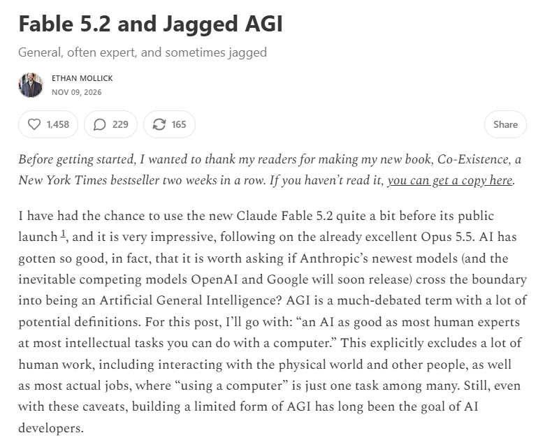
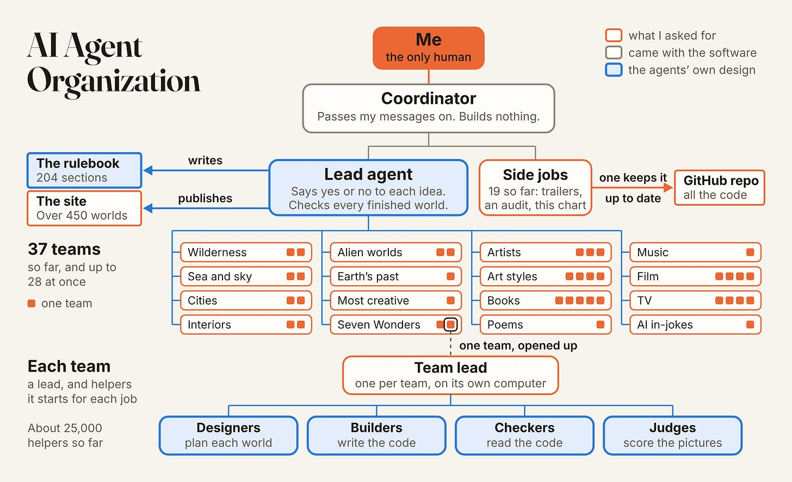
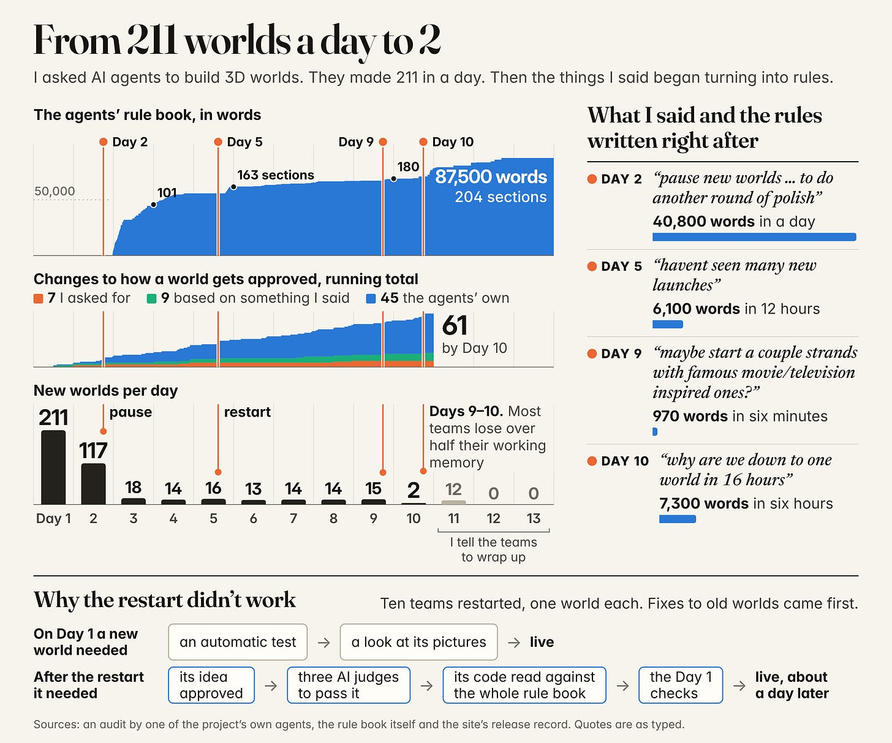
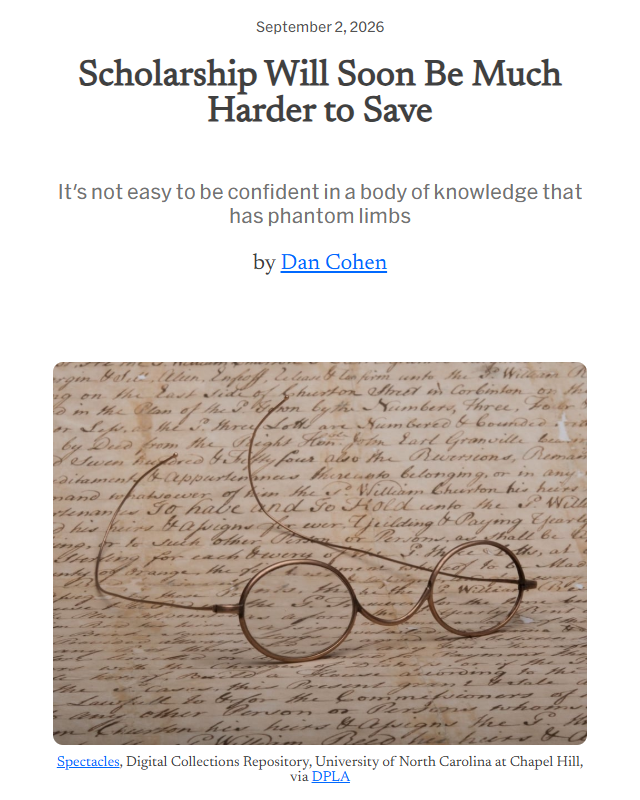
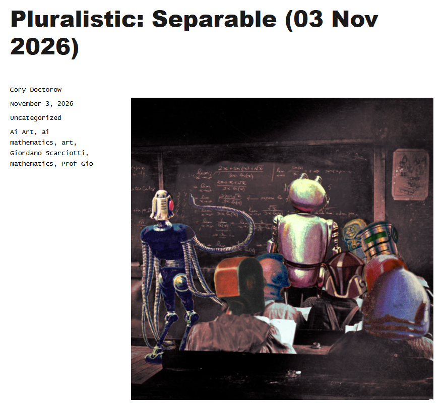
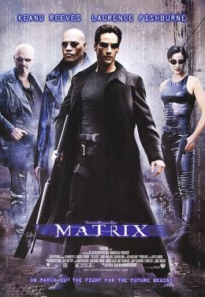
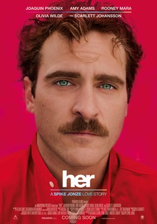

Ethan Mollick, “Fable 5.2 and Jagged AGI,” One Useful Thing, Nov. 9, 2026
A limited definition
“For this post, I’ll go with: ‘an AI as good as most human experts at most intellectual tasks you can do with a computer.’ This explicitly excludes a lot of human work, including interacting with the physical world and other people, as well as most actual jobs, where ‘using a computer’ is just one task among many.”
Ethan Mollick, “Fable 5.2 and Jagged AGI,” One Useful Thing, Nov. 9, 2026
Jagged AGI
“So as not to keep you in suspense, I think the answer is that this is ‘almost’ AGI, or what I have called Jagged AGI. Even within my limited definition, there are still important areas in many tasks where AI is jagged enough to fall well behind human capability. But the jaggedness is no longer about simple errors or hallucinations, which makes it harder to describe.”
Ethan Mollick, “Fable 5.2 and Jagged AGI,” One Useful Thing, Nov. 9, 2026
Auden’s impossible class
“Fable’s first version was accurate and joyless: a fifteen-week course website with tests. I told it it created ‘a brutal slog through the most boring webpages’ and told it to make something beautiful. Its first try at that created a kiddie game where you had to ring bells, so I had to give more feedback. When I asked it to explain why a poem’s rhythm or word choice mattered, it wrote confident readings without considering what Auden said about them.”
Ethan Mollick, “Fable 5.2 and Jagged AGI,” One Useful Thing, Nov. 9, 2026
![Is there a universal story? An AI read 1,186 stories from around the world, section by section, to see what they share. They share no one shape or plot, but most are built from the same few parts. Story diagrams from Aristotle, Zeami, Freytag, Campbell, Vonnegut, and Reagan and colleagues, then 904 story arcs sorted into shapes: 38% fall then rise, 19% rise fall rise, 11% rise then fall, 11% fall, 10% rise, 4% fall rise fall, 7% something else. Footer: Read, counted and drawn by an AI. No person checked the readings.](media/weekfourteen-mollick-universal-story.jpg)
Ethan Mollick, “Fable 5.2 and Jagged AGI,” One Useful Thing, Nov. 9, 2026
Faster than anyone can read
“However, that leaves out a substantial part of the work of research: no human has fully checked the results, including me. AI can now produce research faster than anyone can read it, creating a crisis in a lot of academia.”
Ethan Mollick, “Fable 5.2 and Jagged AGI,” One Useful Thing, Nov. 9, 2026

Ethan Mollick, “Fable 5.2 and Jagged AGI,” One Useful Thing, Nov. 9, 2026
The AI had built a bureaucracy
“By the next morning there was a rule book (I never asked for one) with 84 sections. Rules were added as the AI encountered issues, and no text was ever cut. After twelve days, it had 204 sections and 87,500 words. Soon, launching a new world required an approved idea, three AI judges and a full code review against the rule book.”
Ethan Mollick, “Fable 5.2 and Jagged AGI,” One Useful Thing, Nov. 9, 2026

Ethan Mollick, “Fable 5.2 and Jagged AGI,” One Useful Thing, Nov. 9, 2026
Knowing when it isn’t good enough
“Most critically, the AI did not notice these problems itself. It did not see that the course was a slog or that it had tied itself in knots with its own rulebooks. This was not for lack of checking. […] Knowing when your own work is not good enough is a large part of what makes someone an expert, and it is the part Fable does least reliably.”
Ethan Mollick, “Fable 5.2 and Jagged AGI,” One Useful Thing, Nov. 9, 2026
Who had the idea?
“Every one of these projects, though, happened because I gave the AI an idea. Sometimes that was enough, but for the longer projects, my feedback along the way turned out to matter a lot.”
Ethan Mollick, “Fable 5.2 and Jagged AGI,” One Useful Thing, Nov. 9, 2026

Dan Cohen, “Scholarship Will Soon Be Much Harder to Save,” Humane Ingenuity, Sept. 2, 2026
Preservation and access
“Two of the most important responsibilities of research libraries are twinned: preservation and access. […] If you want to understand an academic work in greater depth, you can follow the trail of its connections, and access the various components that went into its construction.”
Dan Cohen, “Scholarship Will Soon Be Much Harder to Save,” Humane Ingenuity, Sept. 2, 2026
More tentacles than an octopus
“Now comes the emerging AI-assisted workbench for researchers, which has not a single additional limb but more tentacles than an octopus, some of them hard to grasp.”
Dan Cohen, “Scholarship Will Soon Be Much Harder to Save,” Humane Ingenuity, Sept. 2, 2026
Nondeterministic scholarship
“This fluidity is acceptable when planning a vacation or composing an email message, but it is highly problematic for the scholarly record. Accurately preserving scholarship that used AI assistance requires far more work. For example, we might want to note which AI model was used by the researcher and store a transcript of their interaction, but is that really enough information? Do we also need to preserve the model itself?”
Dan Cohen, “Scholarship Will Soon Be Much Harder to Save,” Humane Ingenuity, Sept. 2, 2026
A black box
“If the disciplinary workbench becomes a black box we can’t see into or understand, we will have trouble reconstructing the scholarly process and its conclusions.”
Dan Cohen, “Scholarship Will Soon Be Much Harder to Save,” Humane Ingenuity, Sept. 2, 2026
The Librarian
“Those records, like skills, could be human-readable text files, which would make future access easier. Anthropic should give The Reviewer a buddy: an agent I would call The Librarian.”
Dan Cohen, “Scholarship Will Soon Be Much Harder to Save,” Humane Ingenuity, Sept. 2, 2026
Phantom limbs
“And if we can’t preserve these models and other AI tools, will there be any way for a future researcher to do the kind of scholarly forensics that are still possible today? Or will our ability to reconstruct important breakthroughs falter because some of the limbs of a once-solid body of knowledge have turned into phantoms?”
Dan Cohen, “Scholarship Will Soon Be Much Harder to Save,” Humane Ingenuity, Sept. 2, 2026

The Edison Test
“The reason old-timey people couldn’t tell the difference between a phonograph and a live performance was that before the phonograph, every live performance had a performer.”
No one is home
“These creators were figments of our imagination. No one is home inside the AI. The intentionality we imputed to these works was the actual ‘AI hallucination.’”
Needle hiss
“For many of us, chatbots that used to pass the Turing Test now flunk it. The chatbots haven’t gotten worse at impersonating humans, we’ve just gotten better at spotting the difference between a human and a bot, just as we got better at hearing the difference between a phonograph and a pianist.”
Separable
“Writing without a writer and paintings without a painter are new phenomena, and learning to separate the formerly inseparable is the first step in our societal metabolization of these novelties. Recordings of musical performance have a place in our world, and so do performers.”
Centaurs
“One way to understand Tao is as a ‘centaur,’ the automation theory term for a worker who is assisted by a machine. For all that Tao describes Chatgpt as his collaborator, it’s clear from reading the chat-logs that it’s Tao who drives the research agenda. He sets the questions and the direction of the answers. Chatgpt doesn’t give him orders – it’s the other way around.”
Solutions without insights
“In other words, in a world where mathematicians and mathematics are inseparable, every solution to a longstanding problem heralds an accompanying theoretical insight. Once we separate mathematics from mathematicians, we start to get solutions without insights.”
Mathematics without mathematics
“[I]f we convince people that we’re heading into a world of mathematics without mathematicians, that’s exactly what we’ll get, because no one will try to become a mathematician. But because mathematics without mathematicians is a set of guide maps for crossing Königsberg’s bridges (but not graph theory), then mathematics without mathematicians is also mathematics without mathematics.”
This week: Custom Bots (extra credit)
- Option One: build and share a Claude Skill (up to 6 points)
- Option Two: try a local model at CHDR (up to 6 points)
- Option Three: fine-tune a small model on a public-domain corpus (up to 10 points)
- Due Sunday, December 6 — then the Final Reflection, due Thursday, December 10
Mrs. Davis
Peacock · 2023 · created by Tara Hernandez and Damon Lindelof
A nun (Betty Gilpin) sets out to destroy Mrs. Davis, the all-knowing algorithm the rest of the world adores.
Pluribus
Apple TV · 2025– · created by Vince Gilligan
Carol Sturka (Rhea Seehorn) is one of the few people left out when the rest of humanity is joined into a single, contented hive mind.
Upload
Prime Video · 2020–2025 · created by Greg Daniels
The dying can be uploaded to a digital afterlife, sold by the tier and run like any other subscription service.
Ghost in the Shell: Stand Alone Complex
2002–2005 · directed by Kenji Kamiyama, Production I.G
Section 9 returns for the Laughing Man case — and the Tachikoma think tanks start to wonder whether they have ghosts of their own.
The Matrix films
1999–2021 · the Wachowskis
The Wachowskis’ cyberpunk trilogy (and its 2021 return), openly indebted to Ghost in the Shell.

Her
2013 · written and directed by Spike Jonze
A lonely writer falls in love with his operating system, Samantha — the film Sam Altman invoked with a one-word post, “her,” at GPT-4o’s voice launch in 2024.
